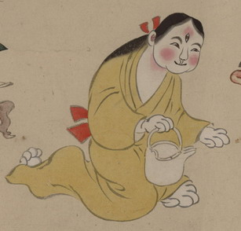

← 图鉴索引

堤子を持つ三つ目の化物。髪が長く、黄色い着物をまとっている。手足は猫のようである。
出典：親書誌：U426_nichibunken_0154：妖怪絵巻；ヨウカイエマキ／日付：2010／資源識別子：U426_nichibunken_0154_0068_0000
Copyright (c)2010- International Research Center for Japanese Studies, Kyoto, Japan. All rights reserved.